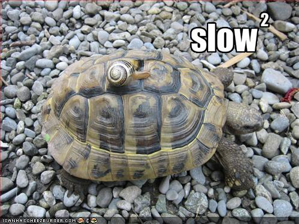

Testing APIs
(with Behat and PHPUnit)
Omni Adams
What you'll (hopefully) learn
- start with testing an API with PHPUnit and CURL
- have a brief discussion about doing this locally
- finish with building tests in Behat
- and how to use these tests to guide your API development
What you'll (accidentally) learn
- I assume you already are familiar with some things
- What an API is
- How to run PHPUnit
- How to run Behat
- if you're not already familiar with them
- I take no responsibility for you accidentally learning
What you'll (probably not) learn
- You won't learn how to write unit tests
- or an API
- or integration tests
What you'll (definitely not) learn
- We won't mention Selenium
- or how to test front end UI at all
Testing with PHPUnit and cURL
- Let's start with a simple PHPUnit test
- This may be how you start trying to test your APIs
- And there's nothing really wrong with this
- But you'll hopefully see that Behat makes it easier
- To show how this stuff works, we're going to use FoxyCart
- I'm not affiliated with FoxyCart in any way
- I just think their hypermedia API is well thought out
- As opposed to many APIs, which make you want to → drink IPAs
APIs versus IPAs
- … drink IPAs
- Let's jump right in to FoxyCart's hypermedia API
- and test what happens when we make a GET request
- We'll look at a few of the things you might test
- like response codes, headers, and content
Testing with PHPUnit and cURL
function testBareGet() {
$ch = curl_init(
'https://api-sandbox.foxycart.com'
);
curl_setopt($ch, CURLOPT_RETURNTRANSFER,
true);
curl_exec($ch);
$info = curl_getinfo($ch, CURLINFO_HTTP_CODE);
$this->assertEquals(400, $info);
}
- This PHPUnit test sets up a cURL request to the root URL
- and doesn't set any headers or send any data
- FoxyCart has a required header that you must send
- So this is a bad request
- It returns HTTP 400 to tell us we messed up
HTTP Status Codes
- 1xx
- more information
- 2xx
- it's all good
- 3xx
- you're lost, let us help
- 4xx
- you really messed up
- 5xx
- not your fault, we broke things
- Here's a list of status code categories
- and what they mean
- 100 is used for chunking, caching, or opening web sockets mainly
- 200 means things are working, and tell how it succeeded
- 300 means the client should look somewhere else
- 400 means the server doesn't understand the client
- or the client is asking a bad question
- 500 means the server is messed up
Testing with PHPUnit and cURL
function testBareGet() {
$ch = curl_init(
'https://api-sandbox.foxycart.com'
);
curl_setopt($ch, CURLOPT_RETURNTRANSFER,
true);
curl_exec($ch);
$info = curl_getinfo($ch, CURLINFO_HTTP_CODE);
$this->assertEquals(400, $info);
}
- Using cURL will work to test this API
- However, you end up with this boilerplate code
- You'll either have to abstract it out or repeat it
- Obviously, neither of those are particularly great
- But let's continue with a few more PHPUnit tests
- and test some other pieces of this API endpoint
Testing with PHPUnit and cURL
function testContentTypeOnError() {
$ch = curl_init(
'https://api-sandbox.foxycart.com/');
curl_setopt($ch, CURLOPT_RETURNTRANSFER,
true);
curl_exec($ch);
$info = curl_getinfo($ch,
CURLINFO_CONTENT_TYPE);
$this->assertEquals(
'application/vnd.error+json', $info);
}
- Here's a test for checking the content type
- You can see that it's very similar to the last one
- It uses curl_getinfo() to check the content-type header
- Easy enough, right?
- But what if you want to test other headers?
Testing with PHPUnit and cURL
function testCacheControlHeader() {
$ch = curl_init(…);
curl_setopt($ch, CURLOPT_RETURNTRANSFER,
true);
curl_setopt($ch, CURLOPT_HEADER, true);
$output = curl_exec($ch);
$this->assertContains('Cache-Control: no-cache',
$output);
}
- For the sake of argument
- let's check the cache-control header
- Cache control isn't exposed from curl_getinfo
- So we have to just check the header strings
- by → including them in the output
Testing with PHPUnit and cURL
function testCacheControlHeader() {
$ch = curl_init(…);
curl_setopt($ch, CURLOPT_RETURNTRANSFER,
true);
curl_setopt($ch, CURLOPT_HEADER, true);
$output = curl_exec($ch);
$this->assertContains('Cache-Control: no-cache',
$output);
}
- … including them in the output
- And seeing if they exist there
- Again, obviously not ideal
- But it will work
Testing with PHPUnit and cURL
public function testOutputContainsErrorMessage() {
$ch = curl_init(…);
curl_setopt($ch, CURLOPT_RETURNTRANSFER,
true);
$output = curl_exec($ch);
$this->assertContains(
'FOXYCART-API-VERSION request header',
$output);
}
- Here we're checking the content of the API's output
- This shows another problem with doing it this way
- You can't really tell the difference between headers
- and the content returned by the API
Testing with PHPUnit and cURL
public function testOutputAsJson() {
$ch = curl_init(…);
curl_setopt($ch, CURLOPT_RETURNTRANSFER,
true);
$output = curl_exec($ch);
$output = json_decode($output);
$this->assertContains(
'FOXYCART-API-VERSION request header',
$output[0]->message);
}
- One way to get around that particular problem
- Parse the response as JSON
- This is a bit more explicit,
- finding the message where we expect it in the output
Testing with PHPUnit and cURL
api-testing(200) /$ phpunit apiTest.php
PHPUnit 3.7.28 by Sebastian Bergmann.
.....
Time: 1.21 seconds, Memory: 2.75Mb
OK (5 tests, 5 assertions)
- Here's the PHPUnit output when we run our five tests
- Only five tests
- and our suite already takes over a second to run
- If we were to include these tests with our unit tests
- this would probably convince devs to stop running them
- after all, slow → tests are unrun tests

- … tests are unrun tests
- So you may want to add a group annotation to these tests
- like integration or slow
- so developers can filter which get run
/